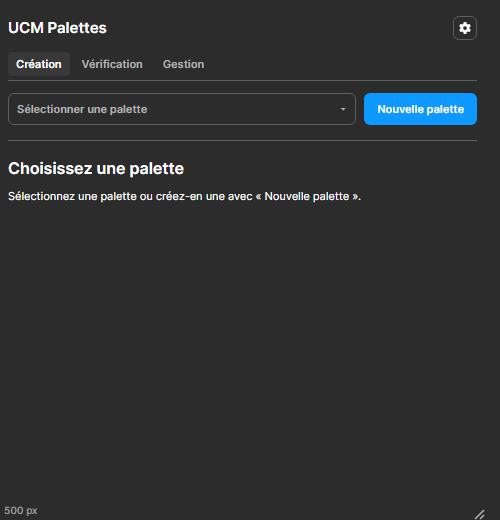

Ce que montre chaque onglet sans palette ouverte
Constat R6 de la recette v8. La première série de propositions listait les palettes avec l'état de leurs tokens et de leur planche : elle refaisait Gestion dans Création. Cette série part du rôle de chaque onglet, et ne montre dans un onglet que ce qui sert ce rôle.
| Onglet | Son rôle | Sa question | Sans palette ouverte, il montre |
|---|
| Création | Régler une palette : sa référence, ses nuances, ses réglages | « À quoi ressemble ma palette ? » | De quoi commencer à régler, jamais l'état d'écriture |
| Vérification | Contrôler les contrastes et les écarts de couleur | « Mes couleurs tiennent-elles ? » | Ce qui se vérifie à l'échelle de toutes les palettes |
| Gestion | Relier les palettes au fichier Figma : tokens, planches, sauvegarde | « Qu'est-ce qui reste à écrire ? » | Déjà tout : il ne dépend d'aucune palette ouverte |
Règle qui en découle : l'état des tokens et des planches ne se montre que dans Gestion. Création et Vérification parlent de couleur.
Aujourd'hui

Ce qui manque
- L'écran est une impasse : il faut ouvrir le sélecteur pour faire quoi que ce soit.
- Vérification montre la même invitation, alors qu'elle aurait des choses à dire sur l'ensemble des palettes.
Création : un écran d'accueil
Deuxième série pour Création. Sans palette ouverte, l'onglet devient un écran d'accueil : un geste principal, « Créer une palette », et les palettes existantes montrées comme des couleurs, sans rampe ni état. Rien n'y ressemble au tableau de Gestion. La barre du sélecteur s'efface sur cet écran ; elle revient dès qu'une palette est ouverte. Dans un fichier sans palette, chaque piste garde seulement son titre, sa phrase et « Créer une palette ».
A1. Les couleurs qui se mêlent
UCM Palettes⚙
CréationVérificationGestion
Que voulez-vous régler ?
Partez d'une couleur, le plugin calcule ses nuances et vérifie leurs contrastes.
Créer une palette
ou reprendre
Bleu
Jaune
Ardoise
Le principe
- En tête, une petite illustration faite des couleurs de référence du fichier, mêlées : l'accueil change avec le fichier.
- Un titre en question, une phrase, un bouton principal.
- Sous « ou reprendre », un disque par palette, à sa couleur de référence, avec son nom. Un clic ouvre la palette.
Pour
- Chaleureux sans rien ajouter de technique ; la couleur seule identifie chaque palette.
Contre
- Au-delà de douze palettes, les disques passent sur plusieurs lignes ; l'illustration ne mêle alors que les trois premières.
A2. Le nuancier de papeterie
UCM Palettes⚙
CréationVérificationGestion
Vos palettes
Choisissez une carte pour la régler, ou commencez-en une.
Bleu
Jaune
Ardoise
+
Nouvelle
palette
Le principe
- Chaque palette est une carte de nuancier de papeterie : trois aplats, clair, référence et sombre, et le nom sur une bande blanche.
- La dernière carte, en pointillés, crée une palette : le geste de création prend la même forme que les palettes qu'il produit.
Pour
- Un objet familier aux designers, tactile, sans aucun mot technique.
- Trois aplats suffisent à distinguer deux palettes proches, mieux qu'un disque.
Contre
- Le bouton bleu « Créer » disparaît au profit d'une carte : le geste principal est moins appuyé.
A2. Le nuancier de papeterie, deuxième version : jusqu'à vingt palettes
Retour du mainteneur : les cartes plaisent, mais elles sont trop grandes pour vingt palettes, et « Nouvelle palette » doit être plus en avant. Deux variantes, chacune montrée avec trois palettes et avec vingt. Dans les deux, « Nouvelle palette » est le bouton principal, pleine largeur, en tête de l'écran.
A2a. Cartes compactes, sept par rangée
UCM Palettes⚙
CréationVérificationGestion
＋ Nouvelle palette
Partez d'une couleur de référence.
Vos palettes 3
Trois palettes
UCM Palettes⚙
CréationVérificationGestion
＋ Nouvelle palette
Partez d'une couleur de référence.
Vos palettes 20
Vingt palettes
Le principe
- La carte passe de 76 × 118 px à 60 × 80 px : trois aplats (clair, référence, sombre), puis le nom, coupé au besoin. Sept cartes par rangée à 500 px ; vingt palettes tiennent en trois rangées.
- Les cartes suivent l'ordre de la recette, comme le sélecteur.
- « Nouvelle palette » quitte la grille et devient le bouton principal, pleine largeur, avec sa phrase.
Pour
- Garde l'objet nuancier qui a plu, à une taille qui tient vingt palettes sans défilement à 520 px de haut.
Contre
- À 60 px, un nom long se coupe (« Terracota » tient, « Bleu nuit profond » non) ; le nom entier paraît au survol.
A2b. Bandes de nuancier, sur deux colonnes
UCM Palettes⚙
CréationVérificationGestion
＋ Nouvelle palette
Partez d'une couleur de référence.
Vos palettes 3
Trois palettes
UCM Palettes⚙
CréationVérificationGestion
＋ Nouvelle palette
Partez d'une couleur de référence.
Vos palettes 20
Vingt palettes
Le principe
- La carte se couche : une bande de trois aplats, puis le nom en entier à côté. Deux colonnes ; vingt palettes tiennent en dix lignes de 28 px.
- « Nouvelle palette » en bouton principal, comme A2a.
Pour
- Le nom ne se coupe plus, et la forme tient bien au-delà de vingt palettes.
- La lecture se fait comme une liste, plus rapide pour trouver un nom.
Contre
- Moins « papeterie » : la carte debout, qui a plu, devient une ligne.
A3. Une phrase
UCM Palettes⚙
CréationVérificationGestion
Ce fichier a trois palettes :
Bleu,
Jaune et
Ardoise.
+ Créer une palette
Le principe
- Une seule phrase en grand, où chaque nom de palette est un lien coloré qui l'ouvre.
- Dessous, « Créer une palette » en lien d'action.
Pour
- Le plus minimaliste : rien qu'une phrase, qui se lit comme un accueil.
Contre
- Au-delà de six palettes, la phrase devient une liste ; il faut alors une autre forme.
- Un nom à sa propre couleur sur fond sombre peut manquer de contraste : il faut éclaircir la couleur du texte, comme ici.
A4. Reprendre là où vous étiez
UCM Palettes⚙
CréationVérificationGestion
Jaune
La dernière palette réglée dans ce fichier.
Reprendre JauneCréer une palette
Autres palettes
Bleu
Ardoise
Le principe
- La dernière palette réglée prend la scène : un grand disque, son nom, « Reprendre ».
- « Créer une palette » en second bouton, les autres palettes en petits disques.
Pour
- Le geste le plus fréquent, revenir à sa palette, est le bouton principal.
Contre
- Il faut retenir la dernière palette réglée, dans la recette (partagée) ou sur le poste.
Vérification : le nuancier vérifié
Création accueille avec le nuancier A2a. Vérification reprend le même nuancier, aux mêmes places, pour que l'œil retrouve chaque palette d'un onglet à l'autre ; elle y ajoute ce qui lui est propre : le verdict de chaque palette, et ce qui se joue entre deux palettes. Trois pistes, de la plus sobre à la plus poussée, toutes montrées avec les vingt palettes de A2a. Dans chacune, un clic sur une carte ouvre la vérification de cette palette, et le sélecteur reste en tête comme aujourd'hui.
Code des états, partout le même : ✕ rouge, des garanties de contraste manquées ; ! ambre, des points à vérifier sans garantie manquée ; ✓ vert, tout tient.
V3. Le nuancier, un verdict par carte
UCM Palettes⚙
CréationVérificationGestion
Sélectionner une palette▾Nouvelle palette
✕ 2 à corriger! 2 à vérifier✓ 16 tiennent
Entre les palettes 1
≈Sky et Océan se confondent : ΔEok 0,04, seuil 0,05.
Le principe
- Les cartes de A2a, dans le même ordre, chacune avec une pastille d'état dans son coin : ✕ et le nombre de garanties manquées, ! et le nombre de points à vérifier, ✓ quand tout tient.
- En tête, le bilan du fichier en trois boutons-filtres : un clic n'allume que les cartes de cet état, les autres s'atténuent.
- Sous le nuancier, « Entre les palettes » : les paires trop proches, deux mini-cartes et l'écart (l'alerte « palettes proches » du moteur).
Pour
- Même place, même carte que dans Création : on retrouve sa palette sans lire.
- Le bilan du fichier se lit en une ligne, le détail en un coup d'œil.
Contre
- La pastille dit combien, pas où : il faut ouvrir la palette pour savoir quelle nuance manque.
V4. Le nuancier qui montre où ça manque
UCM Palettes⚙
CréationVérificationGestion
Sélectionner une palette▾Nouvelle palette
✕ 2 à corriger! 2 à vérifier✓ 16 tiennent
16 palettes tiennent · 2 à vérifier : afficher
Le principe
- Le filtre « à corriger » est actif par défaut quand le fichier en compte : seules les palettes en défaut s'affichent, une ligne chacune.
- Chaque ligne montre la carte, puis ses deux thèmes : le bouton
solid de la palette en Light et en Dark, avec son texte, tel qu'il sera peint, et le verdict du thème. Le contraste qui manque se voit, il ne se lit pas seulement.
- La garantie en défaut est nommée en clair sous le bouton : « texte des boutons, 4,33:1 ».
- Les palettes qui tiennent restent repliées en une phrase.
Pour
- Va droit au travail : ce qui est à corriger, où, et à quoi cela ressemble.
- Le thème fautif se voit sans ouvrir la palette.
Contre
- Un seul exemple de rendu par thème, le bouton : une garantie manquée sur un contour ou un anneau de focus s'y voit moins ; le nom de la garantie le rattrape.
V5. Le système à l'épreuve
UCM Palettes⚙
CréationVérificationGestion
Sélectionner une palette▾Nouvelle palette
Toutes les palettes à l'épreuve LightDark
Entre les palettes 1
≈Sky et Océan se confondent : ΔEok 0,04, seuil 0,05.
Le principe
- Chaque palette devient un petit morceau d'interface, peint avec ses propres tokens dans le thème choisi : un bouton
solid, une surface teintée avec son texte, un lien sur la page.
- Vingt palettes, vingt échantillons sur la même page : on voit le système entier comme il sera peint, et ce qui détonne saute aux yeux.
- Un échantillon en défaut porte un liseré rouge et sa pastille ; un clic ouvre sa vérification.
- La bascule Light · Dark change tout le système d'un coup.
Pour
- La vérification devient visuelle et collective : l'harmonie entre palettes se juge aussi, pas seulement les contrastes.
- Prolonge l'« Interface de test » de Création à l'échelle du fichier.
Contre
- Le plus coûteux à construire et à rendre : vingt échantillons à peindre à chaque réglage commun.
- Moins lisible pour compter : le bilan chiffré y est secondaire.
Décision et recommandation
Création : A2a, retenue. Vérification : V3, avec la ligne par thème de V4 quand on filtre. V3 garde le nuancier de Création aux mêmes places, ajoute un verdict par carte, un bilan en trois filtres et les paires trop proches. Quand le designer active le filtre « à corriger », les cartes en défaut se déplient en lignes V4 : le bouton de la palette en Light et en Dark, et la garantie nommée. V5 est la piste la plus poussée ; elle vaut d'être gardée comme une vue « à l'épreuve » ajoutée plus tard, une fois V3 en place.